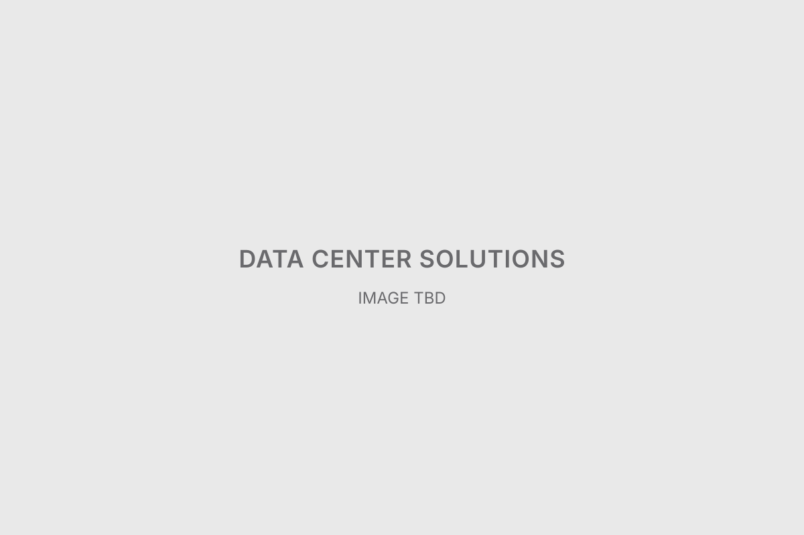

Data Center Solutions
- Client / Platform
- LG Electronics / LG.com B2B
- Period
- 2026
An LG.com B2B project that conveys complex technical information through visual content linking key data center spaces with cooling solutions, supported by product information modules.
데이터센터의 주요 공간과 냉각 솔루션을 연결하는 시각 콘텐츠와 제품 정보 모듈을 제작하여, 복잡한 B2B 기술 정보를 효과적으로 전달하도록 구성한 LG.com 프로젝트.
- Role
-
Design lead · Asset production
디자인 리딩 · 에셋 제작
- Contribution
-
After an initial collaborative phase, I worked on individual deliverables: creating and refining the data center aerial visual and product graphics (including AI image generation, compositing and retouching), and contributing to key content modules including Key Features, Product Lineup and product detail popovers.
초기 공동작업 이후 개별 산출물을 작업하며, 데이터센터 조감 비주얼과 제품 관련 그래픽을 제작·개선(AI 이미지 생성·합성·리터치 포함)하고 Key Features, Product Lineup 및 제품 상세 Popover 등 주요 콘텐츠 모듈 제작에 참여.
More Info
- Constraints
-
LG.com B2B brand and web content standards · revisions driven by feedback and changes in direction · client review and collaboration · accuracy in representing technical products and equipment
LG.com B2B 브랜드 및 웹 콘텐츠 기준 · 피드백과 제작 방향 변경에 따른 수정 · 클라이언트 검토 및 협업 · 기술 제품과 장비 표현의 정확성
- Deliverables
-
Data center aerial visual · Key Features pictograms · Product Lineup content · Four product detail popovers · Product and cooling solution imagery
데이터센터 조감 비주얼 · Key Features 픽토그램 · Product Lineup 콘텐츠 · 제품 상세 Popover 4종 · 제품 및 냉각 솔루션 이미지
- Key decisions
-
- Kept the client-approved aerial angle while improving perspective, equipment placement and image detail.클라이언트가 확정한 조감 앵글을 유지하면서 원근감, 장비 배치, 이미지 디테일을 개선.
- Revised the visuals so that data center facilities and cooling equipment relate naturally.데이터센터 주요 시설과 냉각 장비의 관계가 자연스럽게 표현되도록 비주얼 수정.
- Restructured Product Lineup and popover content as the production direction changed.제작 방향 변경에 대응해 Product Lineup 및 Popover 콘텐츠를 재구성하고 수정.
- Takeaway
-
Through changes in direction and repeated feedback, I kept both the accuracy and the visual consistency of the B2B technical content in mind.
제작 과정에서 방향 변경과 반복 피드백에 대응하며 B2B 기술 콘텐츠의 정확성과 시각적 일관성을 함께 고려했다.
What I Designed

Final Deliverables